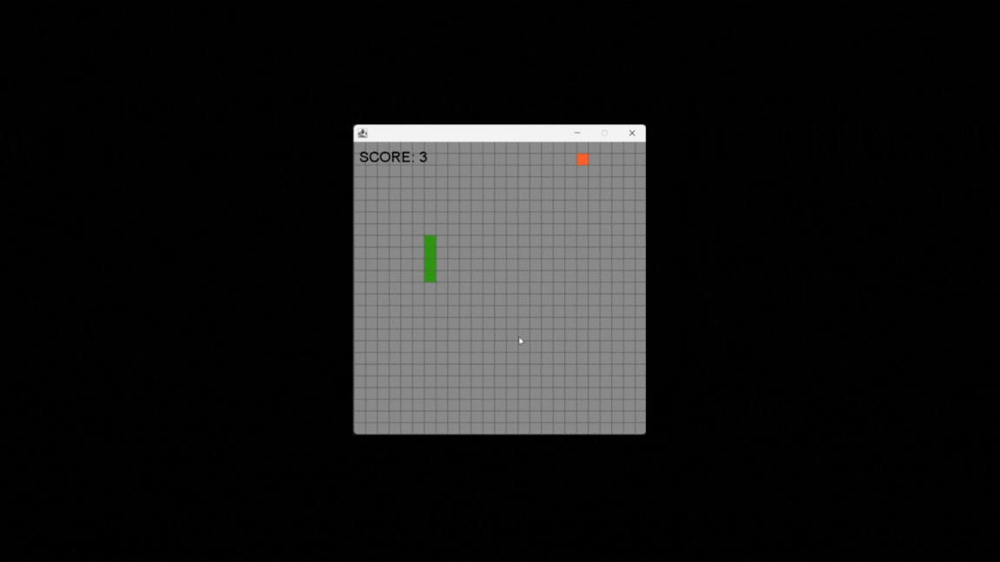

Projets
Au bout d'un semestre dans le monde de l'informatique, j'ai pu participer à plusieur projets !
Projet 1 : Site web sur l'informatique dans le domaine medicale (tp)
Il s'agit d'un travail donné par un profeseur sur un thème specifique (le site n'est pas responsive) Le Site
Projet 2 : App Calculatrice (Java)
j'ai eu l'idée de faire ce projets pour avoir une meillieur comprehension du frontend java et mieux comprendre les algorithme Repo Github
Projet 3 : App TicTacToe (Java)
Application de jeu TicTacToe en java avec une IA simple pour jouer contre l'ordinateur Repo Github

Projet 4 : snake game (Java)
petit jeu Snake en java Pour mieux comprendre les evenement en java et les gameloops Repo Github
